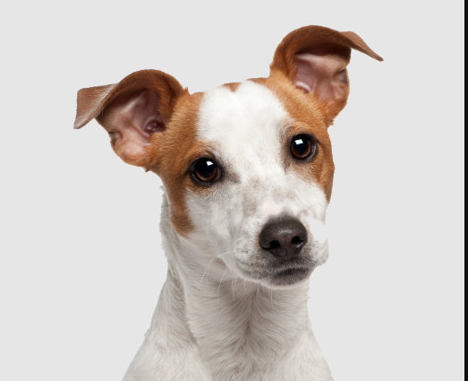
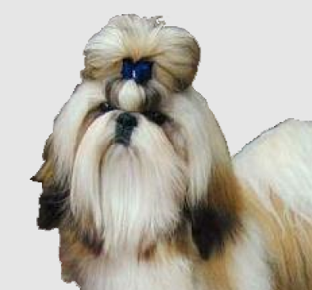
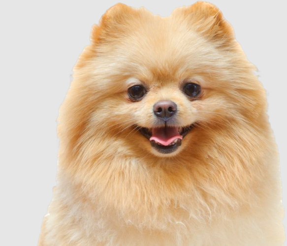
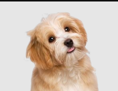

vira lata
Mistura única de várias raças, sem padrão fixo de tamanho ou cor. Destaca-se pela alta resistência, inteligência adaptativa e lealdade. É um cão extremamente afetuoso e companheiro

shih tzu
Cão de companhia da realeza chinesa. Possui focinho bem achatado (braquicefálico), olhos grandes e pelagem densa. É extremamente dócil, brincalhão e gosta de colo
yorkshire terrier
Pequeno caçador de origem inglesa com pelagem fina e sedosa nas cores azul-aço e dourado.É um cão muito valente, cheio de energia, curioso e extremamente apegado aos seus donos.

lulu da pomerania
Cão de origem alemã com aparência de mini leão e pelagem dupla muito volumosa. Destaca-se por ser muito inteligente, ativo, dócil e se adapta muito fácil à rotina da família.

lhasa apso
Raça antiga e sagrada do Tibete, usada originalmente como guardiã de templos nos Himalaias. Possui pelagem longa, reta e uma personalidade bem independente, silenciosa e muito calma.